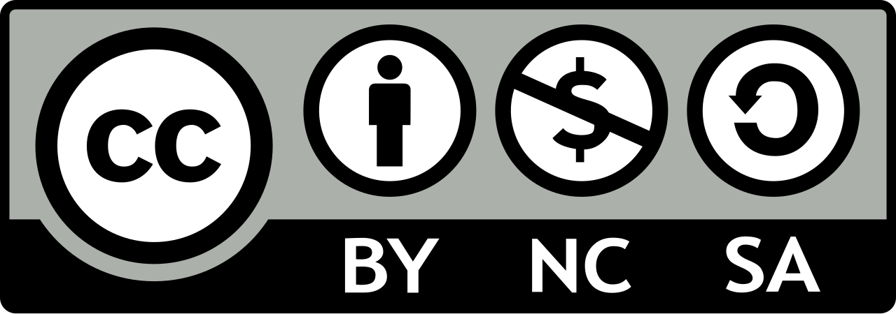

Texto
Texto
Autor: Luis Pardo Vicente
Descripción del proyecto: Situación de aprendizaje en las materias de Filosofía e Historia de 4ºESO que tienen como objetivo explicar desde un punto de vista filosófico e identificar sucesos históricos que cumplen con las pautas teóricas de la teoría del cisne negro.
Licencia de uso SdA Cisne Negro © 2026 por Luis Pardo Vicente está bajo licencia Creative Commons Atribución-NoComercial-CompartirIgual 4.0 Internacional

Puede descargar el archivo de este proyecto en el siguiente enlace Proyecto final Luis Pardo Vicente(elpx - 15525978 B)